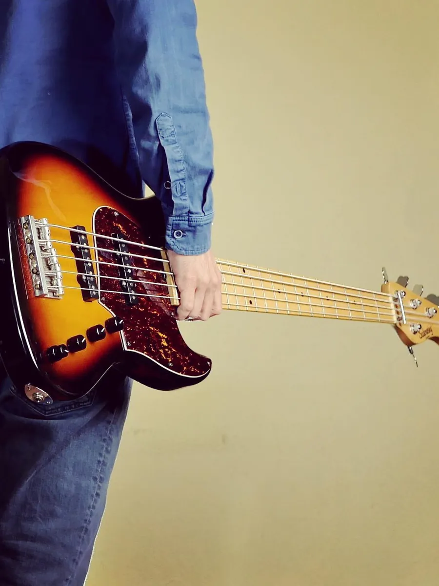
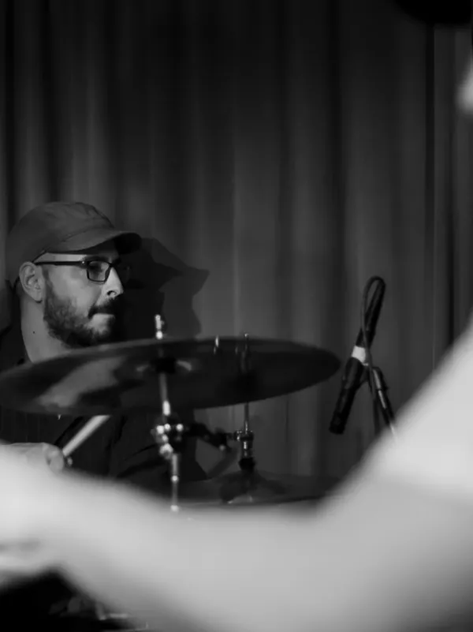
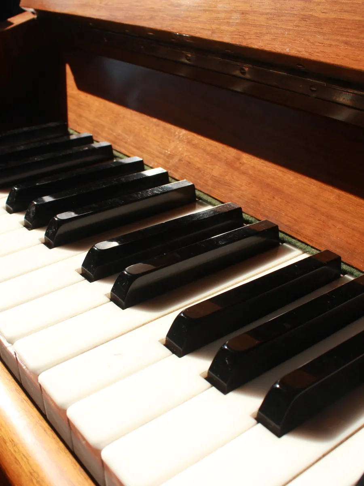
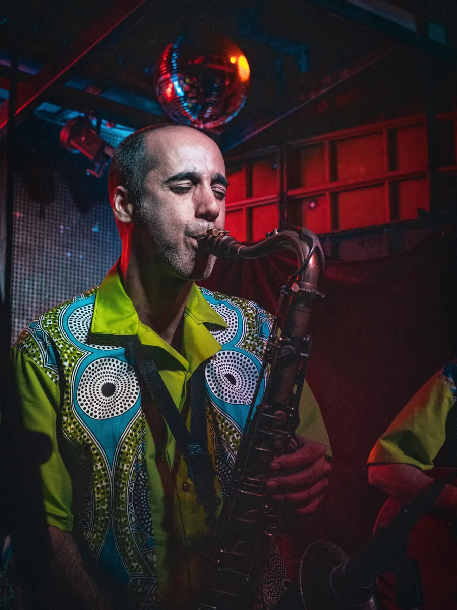

Instrumento y canto
Cursos online o presenciales estructurados en módulos temáticos que se adaptan perfectamente a tus horarios y a tu nivel, para acompañarte hacia el músico que quieres llegar a ser.

Online · Presencial en Madrid
Guitarra reggae
 con Javier Ochoa
con Javier Ochoa
6 cuerdas, infinitas posibilidades
El curso de guitarra eléctrica y acústica con Javier Ochoa es una experiencia que te marca como músico. Pocos profesores transmiten con la pasión hacia el instrumento y el reggae como lo hace Javier. Clases individuales y personalizadas, diseñadas para crear un entorno de apoyo donde los estudiantes de todos los niveles se sientan cómodos y orientados hacia un dominio duradero de la guitarra.
¿Qué voy a aprender?
- Aprender mediante canciones los tipos de guitarra en reggae: rítmica, picking, melódica y solista.
- Descubrir la sonoridad del instrumento y las posibilidades de expresión: bend, vibratos, ligados.
- Usar los pedales y efectos más comunes en reggae: Delay, reverb, phaser, Wah wah.
- Otros géneros hermanos como el blues, jazz, afro, funk, etc.
¿Qué necesito para empezar? Fundamentalmente ganas, un poco tiempo, y una guitarra con ampli que se adapte a tu necesidad. Si no tienes equipo nosotros podemos asesorarte en tu compra para que aciertes al 100%.

Online · Presencial en Madrid
Bajo reggae
 con Pablo Cano
con Pablo Cano
El «bassline»
El curso de bajo eléctrico con Pablo Cano abarca el inmenso temario del bajo de reggae desde un prisma profesional y a la vez divertido. Una música que resuena en el pecho, necesita atender el instrumento de 4 cuerdas con un método progresivo y que se adapta a tus necesidades mediante clases individuales y personalizadas, diseñadas para crear un entorno de apoyo donde te sientas cómodo y orientado hacia un dominio duradero del bajo.
¿Qué voy a aprender?
- Controlar de forma consciente el sonido del bajo.
- Conocer el instrumento y las posibilidades expresivas que ofrece.
- Repertorio de grandes clásicos del reggae.
- Manejar y exprimir el sonido del amplificador.
- Otros géneros hermanos como el blues, jazz, afro, funk, etc.
¿Qué necesito para empezar? Fundamentalmente ganas, un poco tiempo, y un bajo con ampli que se adapte a tu necesidad. Si no tienes equipo nosotros podemos asesorarte en tu compra para que aciertes al 100%.

Online · Presencial en Madrid
Batería reggae

 con Miguel Valenciano y Miguel Moreno
con Miguel Valenciano y Miguel Moreno
Feel the «drumbeat»
Cuando suena el «reggae beat» todo el mundo se mueve. ¿Qué es lo que nos hace balancear la cabeza? El ritmo está impreso en nuestra genética, como forma de comunicación. La batería es de vital importancia en este género por lo que Miguel Valenciano te acompañará en el aprendizaje de los rudimentos técnicos y creativos necesarios para dominar los redobles, cajazos y el groove.
¿Qué voy a aprender?
- Conseguir independencia de manos y pies.
- Conocer y saber interpretar los diversos subestilos o palos.
- Conocer el instrumento y las posibilidades expresivas que ofrece.
- Repertorio de grandes clásicos del reggae.
- Controlar la afinación y sonido del instrumento.
- Otros géneros hermanos como el blues, jazz, afro, funk, etc.
¿Qué necesito para empezar? Fundamentalmente ganas, un poco tiempo y un set básico de batería acústica o electrónica. Para las clases presenciales (sierra de Madrid o local en el centro) se disponen de 2 sets de batería completos.

Online · Presencial en Madrid y Barcelona (piano)
Teclado y órgano
 con David Arribas
con David Arribas
Piano y órgano
El piano permite tener una orquesta bajo tus manos. El reggae le debe mucho a este instrumento y al órgano que son los que aportan esa sonoridad «ku chen ke» a los temas que tanto amamos. Armonía, improvisación, estilo y sonoridad es lo que dominarás en el curso de piano de reggae.
¿Qué voy a aprender?
- Conseguir independencia de manos.
- Conocer y saber interpretar tanto acompañamiento como fraseo.
- Repertorio de grandes clásicos del reggae.
- Explorar las posibilidades creativas del instrumento.
- Otros géneros hermanos como el blues, jazz, afro, funk, etc.
¿Qué necesito para empezar? Fundamentalmente ganas, un poco tiempo y un teclado.

Online · Presencial en Madrid y Barcelona
Saxofón alto y tenor
 con Jorge Rodríguez
con Jorge Rodríguez
Un instrumento con mucho flow
El saxofón ha estado presente en el folclore jamaicano incluso antes que los instrumentos eléctricos. Por eso existen tal cantidad de melodías y fraseos tan característicos en la historia de la música jamaicana. Nuestro profesor de saxo Jorge Rodríguez, te acompañará en este viaje desde el ska al reggae de los 90s, pasando por todas las canciones clásicas del género.
¿Qué voy a aprender?
- Conseguir control de la respiración y la afinación.
- Conocer y saber interpretar acompañamiento como fraseo.
- Conocer el instrumento y las posibilidades expresivas que ofrece: bends, glissandos, etc.
- Repertorio de grandes clásicos del reggae.
- Explorar las posibilidades creativas del instrumento.
- Otros géneros hermanos como el blues, jazz, afro, funk, etc.
¿Qué necesito para empezar? Fundamentalmente ganas, un poco tiempo y un saxo alto o tenor.
Online · Presencial en Madrid
Canto y composición
 con Javier Ochoa
con Javier Ochoa
El instrumento que llevas dentro
La voz, junto con el cuerpo son los instrumentos musicales primarios con los que convivimos toda nuestra vida. Su manejo y control permite una gran expresividad, a lo que se le añade el uso de la palabra, lo que hace de la voz un instrumento sin igual. Explora junto a Javier Ochoa en las infinitas posibilidades de la voz tengas el nivel que tengas.
¿Qué voy a aprender?
- Controlar de forma consciente el sonido de la voz y la respiración.
- Conocer el instrumento y las posibilidades expresivas que ofrece.
- Repertorio de grandes clásicos del reggae.
- Explorar las posibilidades de la rítmica vocal.
- Mejorar en la pronunciación del inglés.
- Otros géneros hermanos como el blues, jazz, hip hop, funk, etc.
¿Qué necesito para empezar? Fundamentalmente ganas, un poco tiempo, el instrumento ya lo llevas puesto.
Para todos los niveles
Nuestro método se basa en situar al alumno y sus necesidades e inquietudes en el centro. Aprenderás por medio de las canciones que más te gusten y también trabajaremos con ejercicios de técnica y teoría relacionada con esa canción. Los materiales que se ofrecen, están basados en tu nivel y preferencias.
Además aprenderás
- Usar la voz y desarrollar el oído interno.
- Conceptos básicos de armonía.
- Técnicas de composición e improvisación.
- Historia del Reggae.
- Teoría musical básica.
- Puesta a punto de tu instrumento.
- Gestionar y emprender artísticamente.
- Interpretación en estudio o directo.
Elige instrumento y prueba
100 €/mes con clase semanal · 60 €/mes con clase quincenal · mismo precio online y presencial. Tarifas y matrícula